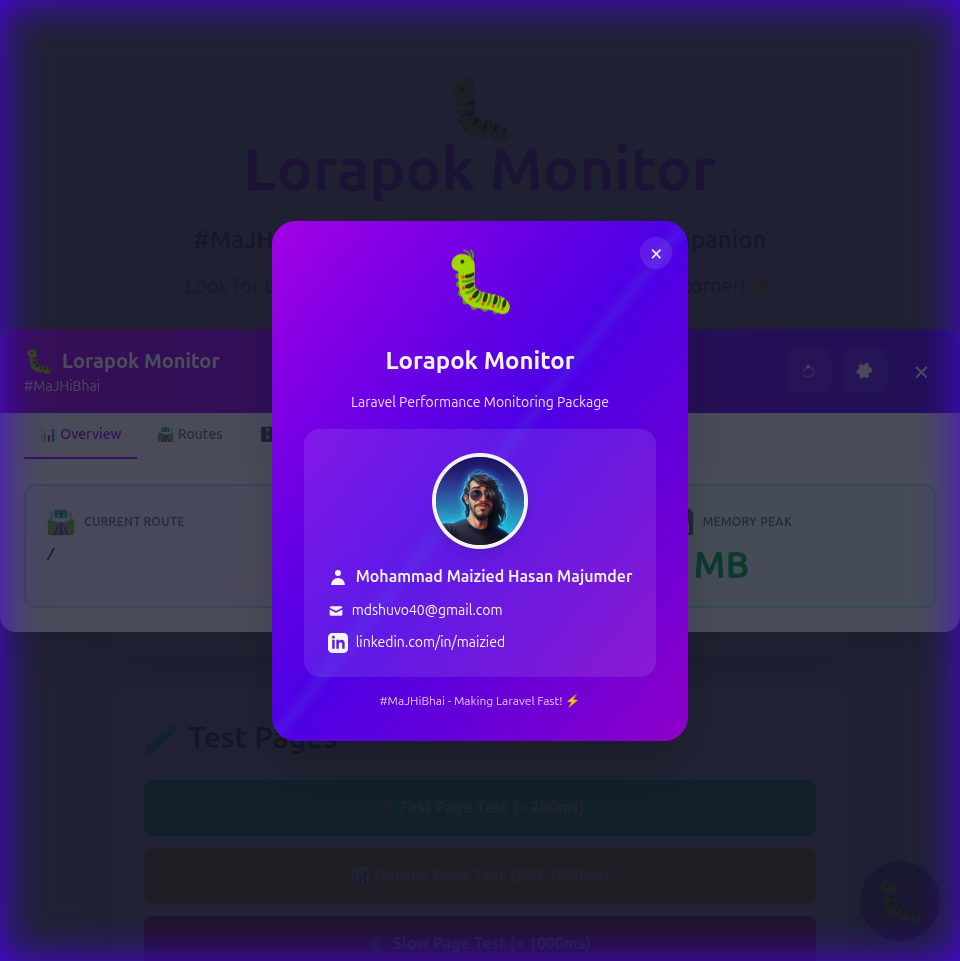

📚 Lorapok Documentation
Complete guide to using Lorapok Laravel Performance Monitoring Package
Installation
composer require lorapok/laravel-execution-monitorThat's it! The package automatically enables in local/dev/staging environments.
Configuration
Publish Config (Optional)
php artisan vendor:publish --tag=lorapok-configEnvironment Variables
# Discord Notifications
MONITOR_DISCORD_WEBHOOK=https://discordapp.com/api/webhooks/...
MONITOR_DISCORD_ENABLED=true
# Slack Notifications
MONITOR_SLACK_WEBHOOK=https://hooks.slack.com/services/...
MONITOR_SLACK_ENABLED=true
# Email Notifications
MONITOR_MAIL_TO=admin@example.com
MONITOR_MAIL_ENABLED=trueUsage
Track Execution Time
use Lorapok\ExecutionMonitor\Facades\Monitor;
Monitor::start('expensive-operation');
// ... your code
Monitor::end('expensive-operation');Using Closures
$result = monitor('api-call', function() {
return Http::get('https://api.example.com/data');
});In Controllers
use Lorapok\ExecutionMonitor\Traits\TracksExecutionTime;
class UserController extends Controller
{
use TracksExecutionTime;
public function index()
{
$this->startTimer('user-fetch');
$users = User::paginate(20);
$this->endTimer('user-fetch');
return view('users.index', compact('users'));
}
}Features
Widget
A beautiful floating button appears in your application with:
- 📊 Overview - Performance metrics at a glance
- 🛣️ Routes - All tracked routes with execution times
- 🗄️ Queries - Database queries with timing and copy-to-clipboard
- 📝 Logs - Client console logs
Visual Tour
Main Dashboard

Developer Info
Settings Panel

Keyboard Shortcuts
Press Ctrl+Shift+C (or Cmd+Shift+C on Mac) to copy the selected query
Changelog
Stay up to date with the latest improvements. View Full Changelog
Clipboard History
All copied queries are stored in browser localStorage (max 20 entries)
Commands
# Check monitoring status
php artisan monitor:status
# Force enable
php artisan monitor:enable
# Disable monitoring
php artisan monitor:disableBroadcasting
Configure Pusher for real-time alerts:
BROADCAST_DRIVER=pusher
PUSHER_APP_ID=your_app_id
PUSHER_APP_KEY=your_app_key
PUSHER_APP_SECRET=your_secret
PUSHER_APP_CLUSTER=ap2Support
For issues and questions:
- GitHub: github.com/Maijied/lorapok
- Email: mdshuvo40@gmail.com